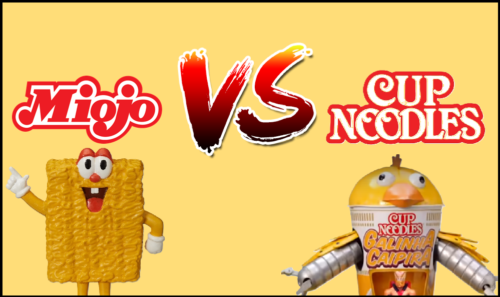
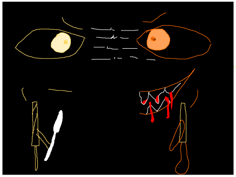
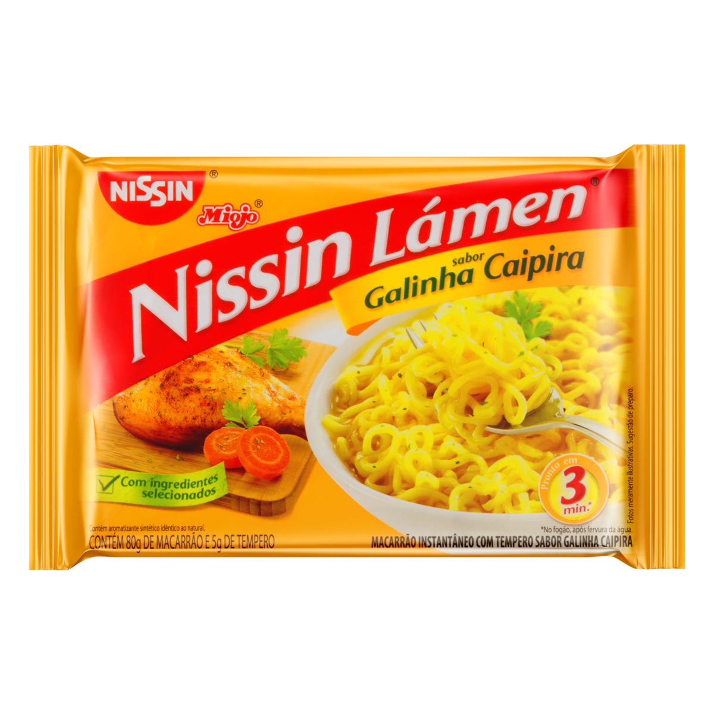
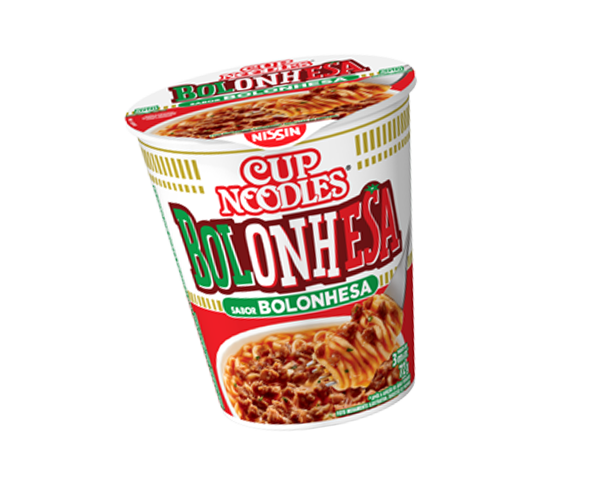
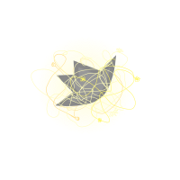

Início
Miojo vs Cup Noodles
História
Recordações
Sobre nós
Perfil

Sobre o Jogo
'Miojo vs Cup Noodles' introduz a história de um ex-general do Reino dos Miojos que, em uma tentativa de recuperar o poder de sua nação, invade a base dos Cup Noodles ao julgar serem eles os responsáveis pela destruição da Panela Suprema, e consequentemente, pela queda dos Nissin Lámen.

General Meus Olhos
Um bravo combatente. Patriota para fazer de tudo pela nação, rebelde para abandonar seu escudo. Virou desertor durante a guerra contra os Cup Noodles. Nunca revelou o motivo, e ninguém teve coragem de espalhar algum boato sequer. Buscou sempre a glória de sua raça, e exterminou as pragas mais agressivas. Nunca se conformou com a proximidade que os Cup Noodles tinham da fronteira. Sua promessa foi de exterminar essa praga também.

Cup Noodles
Seres violentos e asquerosos. Seu único propósito é a guerra, e por isso, sua raça se encontra em miséria, em um confronto de animais por ambições egoístas e primitivas. Desde o ocorrido no templo, sua tribo avançava mais a cada dia sobre o território Nissin. As tropas dos miojos intensificaram a defesa nas fronteiras, mas não foi o suficiente para conter a invasão. Até o momento, o Reino Nissin é vítima de seu controle.

A Panela Suprema
O núcleo do Reino Nissin. Durante muito tempo, foi a fonte do poder dos miojos. Sua energia não tem uma origem explicável, mas se inventaram muitas histórias sobre ela, algumas consideradas verdades por grande parte dos moradores do Reino.